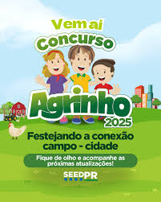
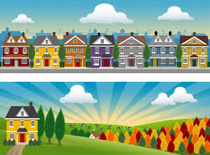

Agrinho
O Projeto Agrinho é um programa de responsabilidade social do Sistema FAEP (Federação da Agricultura do Estado do Paraná) que visa integrar a educação e a agropecuária, promovendo a participação de alunos, professores e comunidade em geral. O programa busca a formação de cidadãos mais conscientes e engajados com a realidade rural, abordando temas como meio ambiente, ética, cidadania, saúde, empreendedorismo e trabalho e consumo.
A conexão entre campo e cidade é fundamental para o desenvolvimento de uma sociedade, sendo caracterizada por uma relação de interdependência. O campo fornece alimentos e matérias-primas para a cidade, enquanto a cidade oferece tecnologia, mercado consumidor e serviços para o campo. Essa relação é essencial para garantir o equilíbrio e a sustentabilidade, pois a produção agrícola no campo é vital para o abastecimento das cidades, e a cidade fornece serviços e tecnologias que suportam a produção agrícola.

